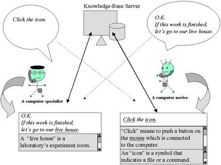

Telme : Communication-Support System for Ongoing Conversations in Users' Background Knowledge
This paper presents a system
that supports human communication via computers
by providing knowledge to users according to individual's
background knowledge and the context of the conversation.
The system takes account of that a word has several meaning
which depends on the context or user's specialty,
so that it helps the listener
to present some annotations
adding to the speaker's speech information
by presuming their background knowledge
in the case of such different field of communication.
The system manages the background knowledge, users' profiles,
and conceptual spaces as users' personal information internally.
The presented knowledge is individually tailored
for the needs of each user
using these personal information.
Additionally, to help the listener understand the speaker,
the system displays
the words that are closely related to the topic
during the conversation as they can realize the topic area.
This paper describes the method
and its application to a conversation between speakers
from different fields.
